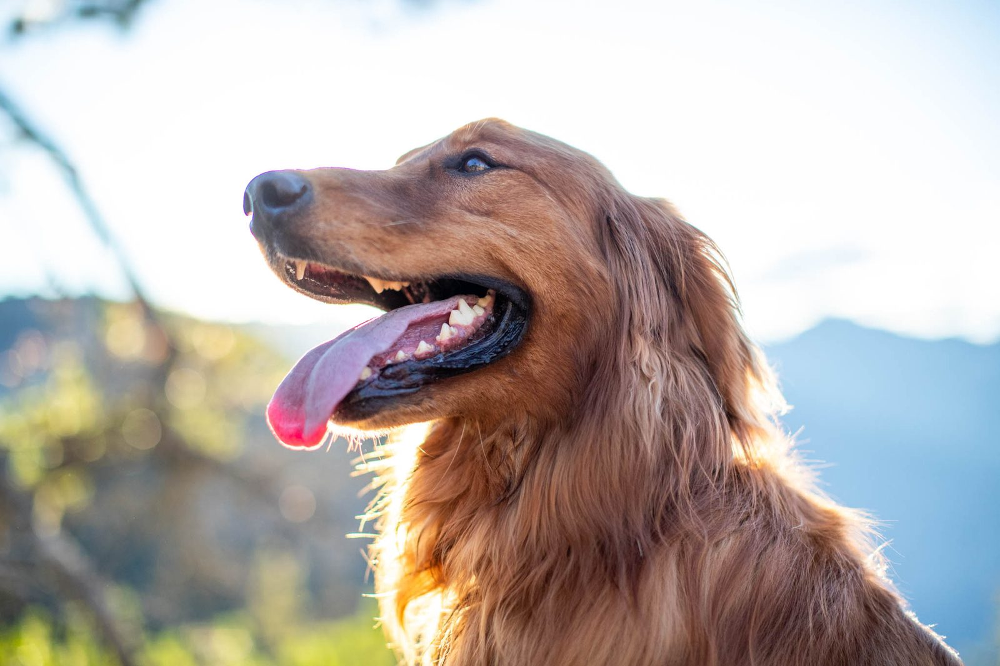
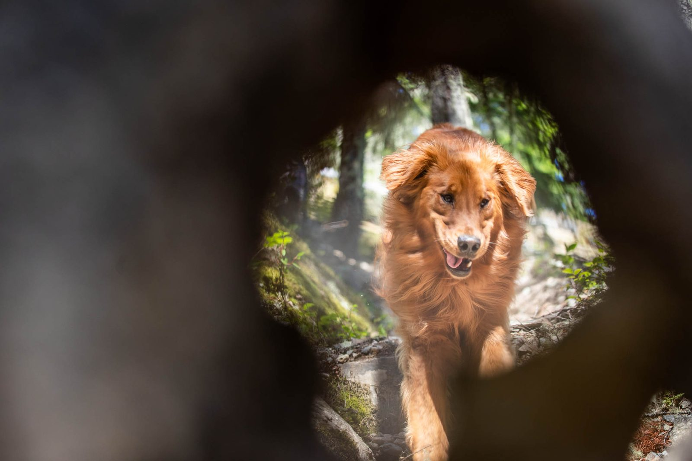

Packing Guide
The short list
Most paddle trips go wrong for small reasons: wet phones, sunburn, no snacks, no warm layer. Here's the list we give first-time renters. Everything fits easily in a canoe, with room to spare.
Included with every rental
- Canoes: paddles, PFDs, bailer and a safety whistle.
- Paddleboards: paddle, PFD, ankle leash and safety whistle.
Put your PFD on before you push off and keep it on. That's the single most important item on the list.

What to wear
- Quick-drying shorts or pants and a synthetic or wool top. Avoid cotton, which stays wet and cold.
- Footwear that can get wet and has some grip: water shoes, sandals with a heel strap or old sneakers.
- A hat and sunglasses with a strap. Sun reflects off the water and burns the underside of your chin.
- A warm layer and rain jacket in a dry bag, even if the forecast is perfect. Mountain weather changes fast.
Keep dry and keep found
- Dry bags: one for electronics and keys, one for spare clothes. A phone pouch with a lanyard is cheap insurance.
- Phone: fully charged, with the offline map downloaded. Reception can be patchy on the lakes.
- Small first-aid kit: plasters, blister care and pain relief.
- Headlamp: if you might be out near sunset.
Food and water
Bring more water than you think you'll need: at least a litre per person, more on hot days. Pack snacks that don't need much fuss, like sandwiches, fruit and trail mix. A small cooler works well in a canoe, and you can anchor it low and in the middle for stability. Pack out everything you bring, including fruit peels.
Sun and bugs
- Reef-safe sunscreen, lip balm with SPF, and reapply once or twice.
- Bug spray for the evening and for shaded, still water. Mosquitoes can show up near marshy shorelines at dusk.

If you're bringing the dog
- A life jacket sized for them, with a handle on the back.
- A collapsible bowl and extra water.
- A towel for the drive home.
- Treats, to reward calm behaviour in the boat.
Our guide to paddling with kids and dogs goes into more detail.
Leave no trace
Pack out what you brought, stay on established launch spots, and give wildlife plenty of room. Herons, eagles and waterfowl nest around the estuary and lakes, and disturbing them can have real consequences.
Questions
Do I need to bring my own life jackets?
No. Every canoe and paddleboard rental includes PFDs for each paddler. If you have a child or a dog that needs a specific size, tell us when you book.
What should I wear for a canoe trip in Squamish?
Quick-drying layers, a hat and sunglasses, plus a warm layer and a rain jacket in a dry bag. Avoid cotton, which stays wet and cold. Shoes that can get wet are best.
Can I bring a cooler and a dog in the canoe?
Yes. A canoe has plenty of room for a small cooler, dry bags and a calm dog. Pack heavy items low and in the middle for stability.
More Sea to Sky guides
- Golden Hour on the Water: Sunrise and Sunset Canoe Trips Around Squamish
- Photographing Your Paddle: Tips for Phone and Camera on the Water
- How to Canoe: A Beginner's Guide
- Canoe vs Paddleboard: Which Should You Rent?
- Paddling with Kids and Dogs in Squamish
- Squamish canoe delivery · Squamish paddleboard delivery